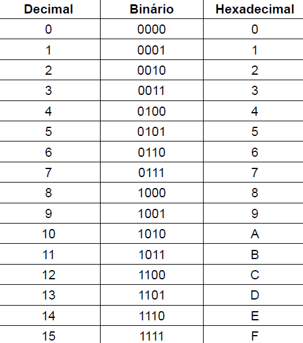

Um sistema de numeração é composto por regras e símbolos que representam quantidades numéricas, facilitando a organização e compreensão dos números. Esses sistemas permitem a realização de operações matemáticas e a comunicação de informações numéricas. No mundo, existem diversos sistemas de numeração, sendo os mais conhecidos o decimal, binário e hexadecimal. Cada um possui uma base numérica específica e um conjunto de símbolos utilizados para representar quantidades.
O sistema de numeração decimal é o sistema numérico mais utilizado atualmente. Ele é baseado em dez símbolos chamados algarismos, contando com os números de 0 a 9.
O sistema de numeração binário é um sistema matemático fundamental na área da computação e da eletrônica, ele possui uma base numérica de dois e emprega apenas os dígitos 0 e 1 para representar seus valores.
O sistema de numeração hexadecimal é outro sistema numérico amplamente utilizado em computação e programação, devido a sua relação direta com o sistema binário e sua capacidade de representar números de forma compacta, ele possui uma base de dezesseis. Os dígito de 0 a 9 representam os valores de 0 a 9, e as letras A a F são usadas para representar os valores de 10 a 15.
No sistema hexadecimal, os dígitos são agrupados em pares quando necessário, facilitando a leitura e representação. Ex: 2F (47), 3A (58).
Para converter um número binário para decimal, siga os seguintes passos:
Por exemplo o número 10111:
(1 x 2⁴) + (0 x 2³) + (1 x 2²) + (1 x 2¹) + (1 x 2⁰)
Portanto, o resultado será 23.
Para converter um número decimal para binário, siga os seguintes passos:
Por exemplo, o número 27:
27 ÷ 2 = 13, resto 1;
13 ÷ 2 = 6, resto 1;
6 ÷ 2 = 3, resto 0;
3 ÷ 2 = 1, resto 1;
1 ÷ 2 = 0, resto 1;
Portanto, o resultado será 11011.
Para converter um número hexadecimal para decimal, siga os seguintes passos:
Por exemplo, o número 2A:
2 x 16¹ + A x 16⁰;
2 x 16 + 10 x 1;
32 + 10
Portanto, o resultado será 42.
Para converter um número decimal para hexadecimal, siga os seguintes passos:
Por exemplo, o número 157:
157 ÷ 16 = 9, resto 13 (D em hexadecimal)
9 ÷ 16 = 0, resto 9 (9 em hexadecimal)
Portanto, o resultado será 9D.